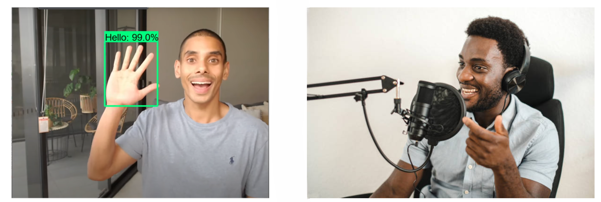

SignBridge is an innovative application that translates spoken language into sign language in real-time, creating a seamless communication bridge for the deaf and hard-of-hearing community. Additionally, it aids students by converting professors' lectures into text, allowing them to take notes effortlessly.
The creation of SignBridge was driven by our commitment to fostering inclusivity and enhancing communication in the academic field for both the deaf and hard-of-hearing community. Our team leveraged state-of-the-art technologies and collaborated with experts in sign language interpretation and assistive technology to develop a seamless and reliable platform.
SignBridge stands out with its unique real-time sign language to speech conversion. Unlike traditional text-to-speech systems, our application can be used in real-time with a camera, allowing deaf students to communicate with professors while moving around. This mobility and immediacy provide a significant advantage in dynamic academic environments. Additionally, our application generates notes from the professor's audio, ensuring that students can keep detailed records of lectures and discussions.